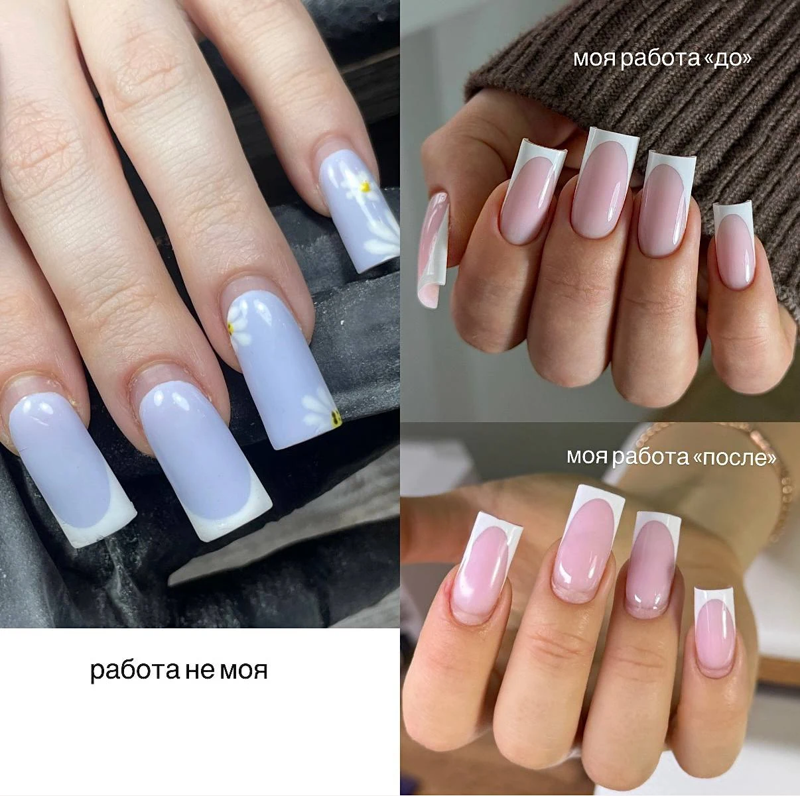
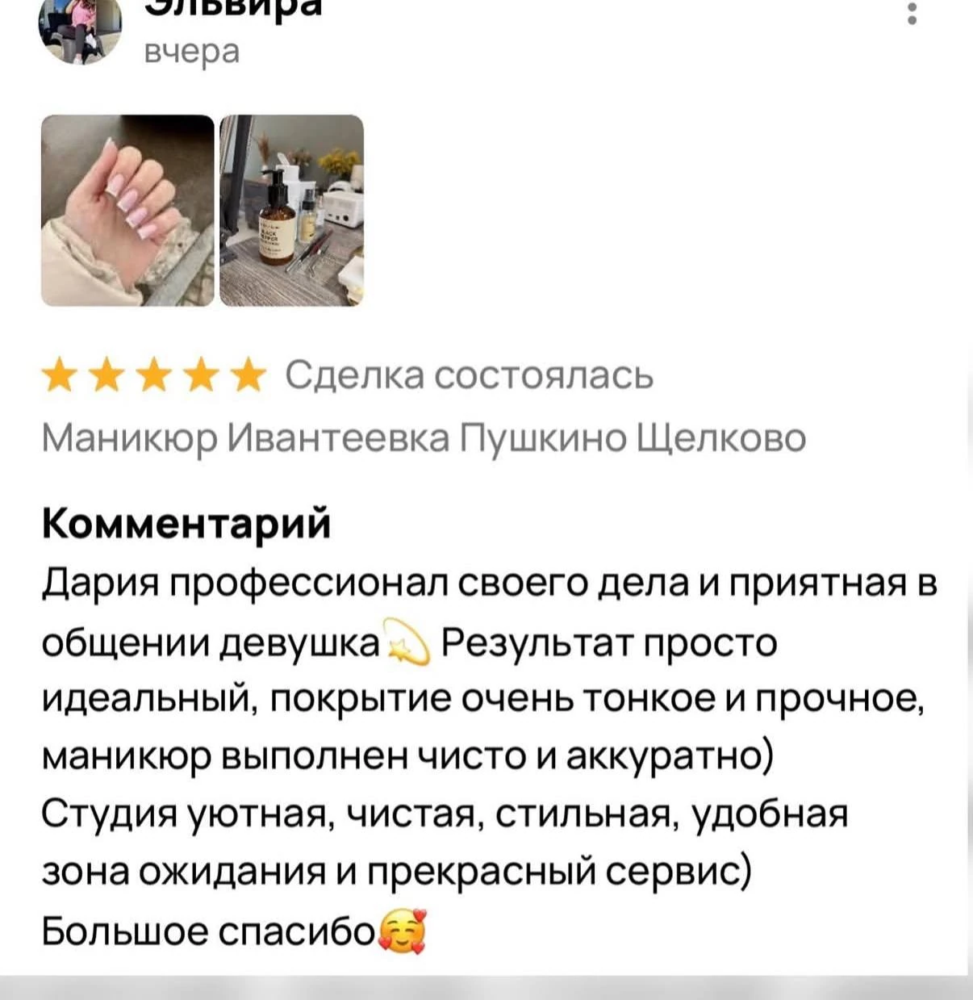
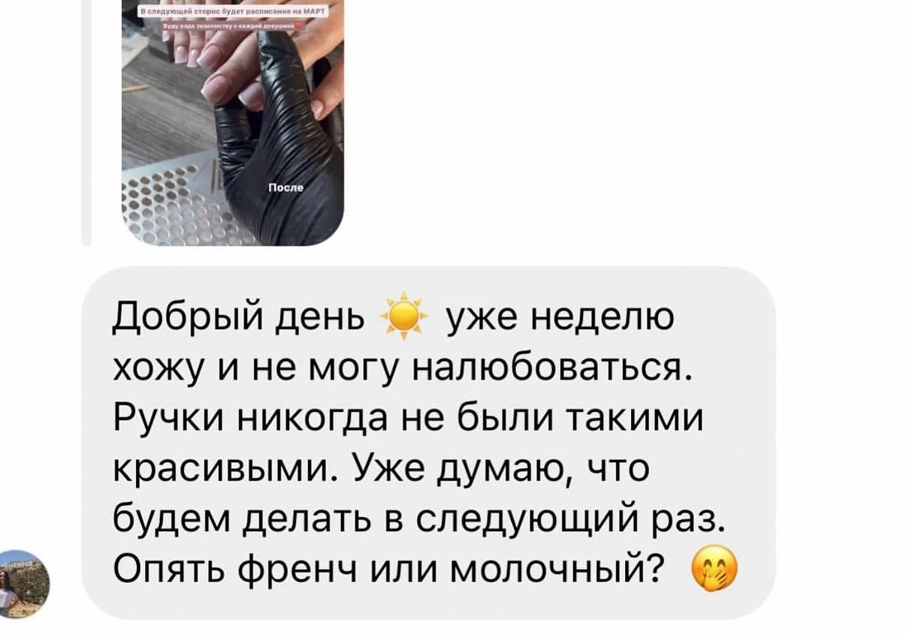
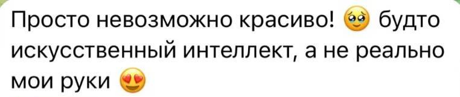
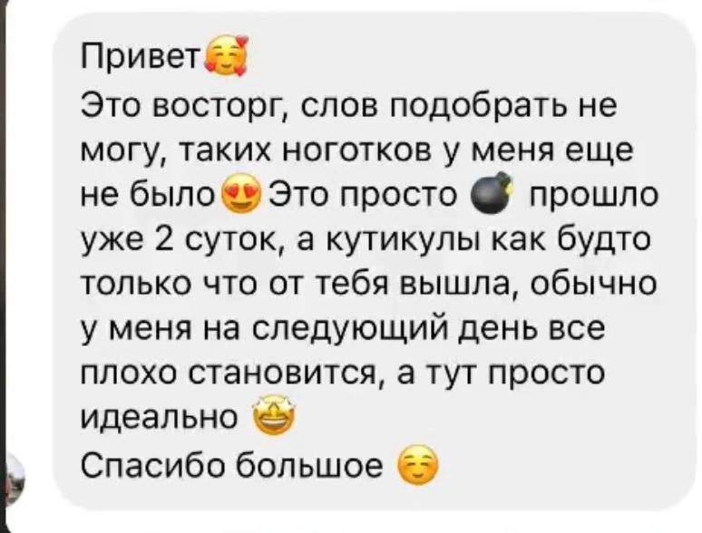
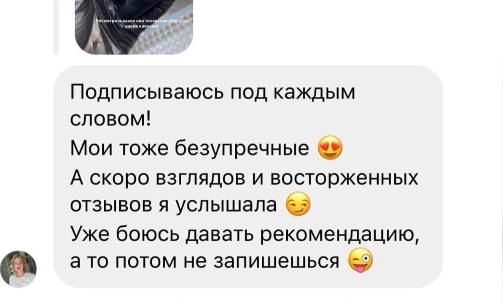
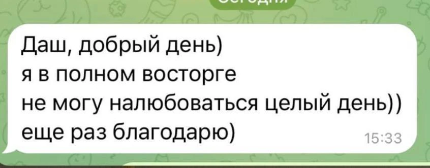
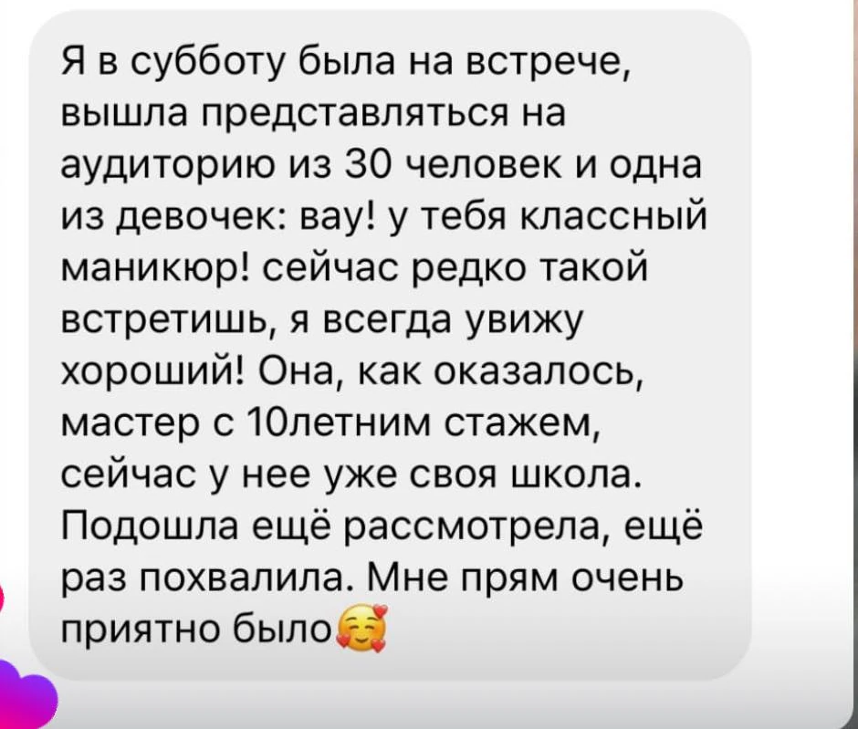

Маникюр тонко · прочно · чётко
Какие проблемыя могу решить?

Форма квадрат не будет расклешённой
Ваша форма квадрат будет с идеально ровными боковыми параллелями, которые не будут уходить в трапецию и выглядеть расклешёнными


Price
маникюр «всё включено»
- Снятие
- Гигиенический маникюр
- Восстановление формы и укрепление гелем
- Донаращивание углов у квадрата
- Ремонт трещин
- Поднятие клюющих
- Покрытие
- Увлажнение рук
Итог3 700 ₽
френч + 500 ₽
Записаться


Красивый и ровный френч —моя отдельная любовь
Работы


Отзывы
«Будто искусственный интеллект,а не реально мои руки»







1/ 7
Запишитесьна удобное время

- Адрес
- Ивантеевка, Фабричный проезд, 1к1, кабинет 106
- Часы
- по предварительной записи
- Телефон
- +7 920 064-76-30
- @nails_dariamir*